Recent Research Topics
Personal use of this material is permitted. Permission from IEEE or other publishers must be obtained for all other uses, in any current or future media, including reprinting/republishing this material for advertising or promotional purposes, creating new collective works, for resale or redistribution to servers or lists, or reuse of any copyrighted component of this work in other works. Please refer to the IEEE Copyright Policy, ACM Copyright Policy or copyrights of other publishers of the following publications.
Modulation Classification Resiliency Against Adversarial Attacks using Mixture GAN
|
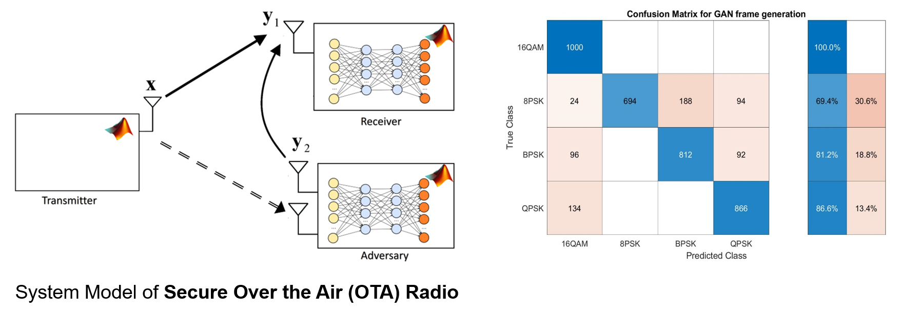 |
{kind=link}
In this project, we propose a novel generative adversarial network (GAN)-based countermeasure approach to safeguard the Deep Neural Network (DNN)-based Automatic modulation classification (AMC) systems against adversarial attack examples. GAN-based aims to eliminate the the adversarial attack examples before feeding to the DNN-based classifier. Specifically, we have shown the resiliency of our proposed defense GAN against the Fast-Gradient Sign method (FGSM) algorithm as one of the most powerful kind of attack algorithms to craft the perturbed signals. The existing defense-GAN has been designed for image classification and does not work in our case where the above-mentioned communication system is considered. Thus, our proposed countermeasure approach deploys GANs with a mixture of generators to overcome the mode collapsing problem in typical GAN facing with radio signal classification problem. Simulation results show the effectiveness of our proposed defense GAN so that it could enhance the accuracy of the DNN-based AMC under adversarial attacks to 81%, approximately.
E. Shtaiwi, A. El Ouadrhiri, M. Moradikia, S. Sultana, A. Abdelhadi and Z. Han, Mixture GAN For Modulation Classification Resiliency Against Adversarial Attacks, under submission.
Channel Estimation for RIS-assisted MIMO systems
|
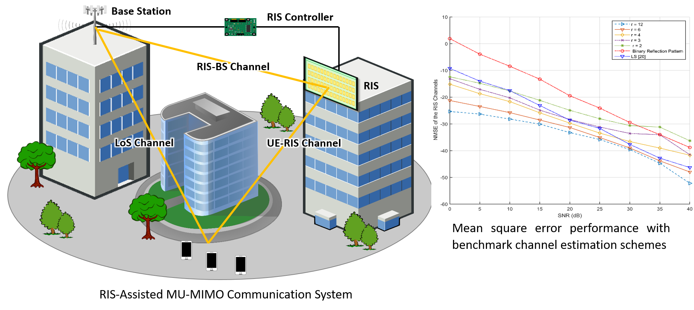 |
{kind=link}
Reconfigurable Intelligent Surface (RIS) has been recently proposed as one of the enabling technologies for Future wireless systems, i.e., Beyond 5G and 6G. RISs provides a new degree of freedom (DoF) that further improves the performance of wireless systems. RISs can smartly shape the propagation environment by changing the phase shifts of its passive elements. The optimal control of the RIS requires the availability of Channel State Information (CSI). In this research, we consider the problem of Channel Estimation (CE) for RIS-assisted Multi-User Multiple-Input Multiple-Output (MU-MIMO) systems. The CE process in a RIS-assisted MU-MIMO is challenging since transmitting and/or signal processing means being unworkable at the RIS. Moreover, both the communication and computation overheads increase as the size of RIS elements increase. We investigate the CE problem for an Uplink (UL) channel for a RIS-aided MU-MIMO system. In particular, we propose an algorithm to estimate the composite channel, the separate RIS-based channels, and the direct channel for the RIS-assisted system by exploiting symmetric positive definite (SPD) properties matrices; e.g., invertibility and existence of global minimum, and the uniqueness of the Chelosky decomposition. We divide the entire RIS surface into smaller sub-RISs, and by controlling the changes in these phase shifts for every sub-RIS surface, we can estimate the overall channel. Moreover, we propose a simple passive pilot sequence scheduling scheme and jointly adjusting the phase shift coefficients of elements on each sub-RIS unit. Simulation results provide the Normalized Mean-square Error (NMSE) performance of the proposed approach compared to other CE techniques.
E. Shtaiwi, H. Zhang, S. Vishwanath, M. Youssef, A. Abdelhadi and Z. Han, Channel Estimation Approach for RIS Assisted MIMO Systems, in IEEE Transactions on Cognitive Communications and Networking, 2021. (IEEE Xplore)
E. Shtaiwi, H. Zhang, A. Abdelhadi and Z. Han, RIS-Assisted mmWave Channel Estimation Using Convolutional Neural Networks, IEEE Wireless Communications and Networking Conference Workshops (WCNCW) 2021. (IEEE Xplore)
Application of Differential Privacy in Deep Learning
|
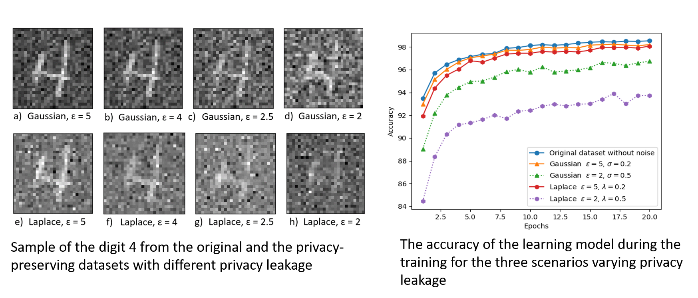 |
{kind=link}
In the last few years, differential privacy (DP) has become a de facto standard for protecting the privacy of clients in deep learning. There are many recent research works based on differential privacy to protect the privacy in deep learning. We analyze and present the main ideas based on DP to protect users’ privacy in deep learning and federated learning. We provide an illustration of all types of random noises that satisfy the DP privacy mechanism, with their properties and use cases. Our study reveals the gap between theory and application, accuracy and robustness of DP, which brings forth many future research directions. Additionally, we propose a methodology for continual learning with a tradeoff between privacy and utility and mitigation of catastrophic forgetting.
A. El Ouadrhiri, A. Abdelhadi, Differential Privacy for Deep and Federated Learning: A Survey, IEEE Access 2022. (IEEE Xplore)
Ahmad Hassanpour, Majid Moradikia, Bian Yang, Ahmed Abdelhadi, Christoph Busch, and Julian Fierrez, Differential Privacy Preservation in Robust Continual Learning, IEEE Access, 2022. (IEEE Xplore)
RIS-assisted Radar and Communication Coexistence System
|
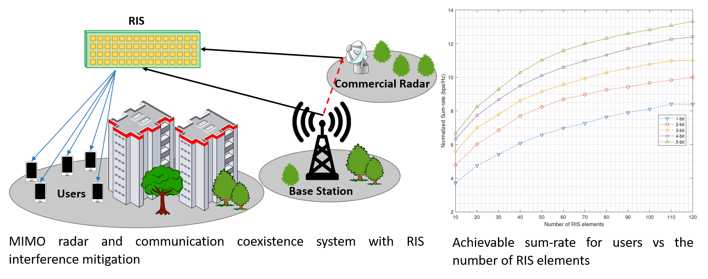 |
{kind=link}
Next-generation wireless communication systems are believed to share the same spectrum previously allocated to radar applications. The coexisting communication system will cause harmful interference to the radar system. In this paper, we investigate the deployment of the Reconfigurable intelligent surface (RIS) to improve the performance of a Multiple-Input Multiple-Output (MIMO) Radar and Communication Coexistence (RCC) system. RIS consists of a large number of nearly passive, and low-cost cost elements. RIS provides passive, and a relatively high beamforming gain by controlling the reflecting elements’ reflection coefficients. Moreover, RIS can eliminate the mutual interference between the radar and communication systems. Meanwhile, we optimally design the transmit beamforming and the phase shifts for the RIS elements to improve the achievable sum-rate performance for the communication system. We jointly optimize the phase shifts and the beamforming vectors by using the local search approach. Numerical results verify the effectiveness of the utilization of the RIS to enhance the downlink sum-rate for the communication system users without interrupting the radar operation.
E. Shtaiwi, H. Zhang, A. Abdelhadi and Z. Han, Sum-rate Maximization for RIS-assisted Radar and Communication Coexistence System, IEEE GLOBECOM 2021. (IEEE Xplore)
Physical Layer Security of Multiple Access Networks
|
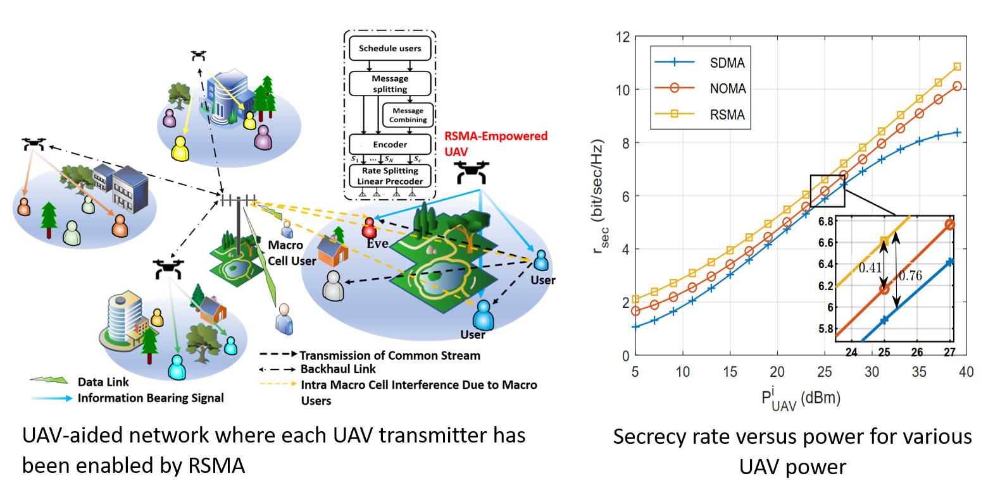 |
{kind=link}
The demand for high data rate and high reliability in 5G and beyond 5G (B5G) is drastically increasing upon user density increasing. Thus, to concurrently serve multiple user, having different services, at the same frequency or time resource, necessity of a multiple access (MA) technique comes into prominence. Recently rate splitting (RS) multiple access (RSMA), which is a generalized joint framework of non orthogonal-multipleaccess (NOMA) and space-division-multiple access (SDMA), was introduced as a promising MA transmission scheme. Meanwhile, physical (PHY) layer security (PLS) has been extensively regarded as a promising approach against security threats. In this research work, we investigate the PLS designs on MA networks with the emphasis on RSMA technique. While using the RSMA, we adopt novel PHY technologies, e.g., reconfigurable intelligent surface (RIS) and UAV, with the aim of improving the secrecy objective. On the other hand, with the proliferation of mobile users increases both the eavesdropping probability of users’ messages and the energy consumption. We consider a UAV-aided cellular network including an over-sailing macro BS and several UAV-aided cells as well as macro-cell users. Multi-antenna UAVs aim to communicate with two legitimate users in the presence of Eve. Given the limited power budget, to strike a tradeoff between the achievable secrecy rate and the energy consumption, we propose energy efficient secure communications in MA networks by appropriately joint design of the RSMA precoder and resource allocation. Our simulation results have shown that the proposed strategy outperforms both the NOMA and the SDMA strategies
H. Bastami, M. Moradikia, M. Letafati, H. Behroozi, and A. Abdelhadi, Outage-Constrained Robust and Secure Design for Downlink Rate-Splitting UAV Networks, IEEE ICC 2021. (IEEE Xplore)
H. Bastami, M. Letafati, M. Moradikia, H. Behroozi, A. Abdelhadi, Lajos Hanzo, On The Physical Layer Security of The Cooperative Rate-Splitting Aided In Downlink UAV Networks, IEEE Transactions on Information Forensics and Security, 2021. (IEEE Xplore)
H. Bastami, M. Moradikia, H. Behroozi, R. C. de Lamare, A. Abdelhadi, and Z. Ding. Secrecy Rate Maximization for Hardware Impaired Untrusted Relaying Network with Deep Learning, Elsevier Physical Communication, 2021. (Elsevier)
Security of Power Systems
|
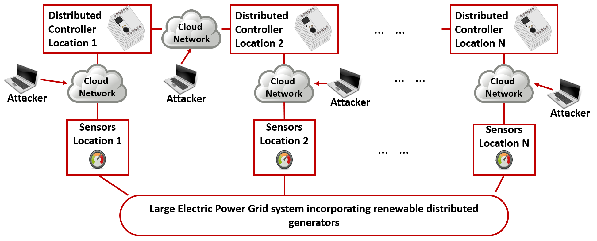 |
{kind=link}
Smart grid is built by combination of electric and information technologies and achieves the two-way interaction between power utilization and power generation. Unfortunately, a new security threat appears together with cyber-physical communication systems. In order to properly monitor power network, an effective cyber attack detection and state estimation method are required to know attack and system states. This article considers the problem of robust grid state estimation and suggests a technique for distributed state estimation in power networks. First, the distribution power system incorporating multiple synchronous generators is modeled as a state-space framework, where attack occurs in measurements. Basically, the false data injection attacks can interfere with state estimation process by tampering with sensor measurements. Using mean squared error principle, the distributed dynamic state estimation algorithm is designed where local and neighboring gains are obtained using optimal filter and graph theory. For local gain computation, the attack parameter is obtained using the Bayesian learning process. The convergence condition of the proposed approach is derived. Extensive simulation results show that the proposed approach is able to estimate the system state within a short period of time. Hopefully, the proposed methodology can be used to tolerate the cyber attacks for improving the confidence of the grid state estimation process.
M. Rana, A. Abdelhadi, and W. Shireen, Monitoring Operating Conditions of Wireless Power Transfer Systems Using Distributed Estimation Process, IEEE ICC 2020. (IEEE Xplore)
M. Rana, A. Abdelhadi, M. Ali, and A. Daowud, Multi-Agent Based Distributed Dynamic State Estimation Algorithm for Smart Grid Integrating Intermittent Electric Vehicles, IEEE SysCon 2021. (IEEE Xplore)
M. Rana, R. Bo, and A. Abdelhadi, Distributed Grid State Estimation under Cyber Attacks using Optimal Filter and Bayesian Approach, IEEE Systems Journal, 2020. (IEEE Xplore)
M. Rana, A. Abdelhadi, and R. Bo, Distributed Attack-Resilient Grid State Estimation Algorithm using Optimal Filter and Graph Theory, IEEE International Symposium on Systems Engineering 2020. (IEEE Xplore)
Fair Deep Learning models
|
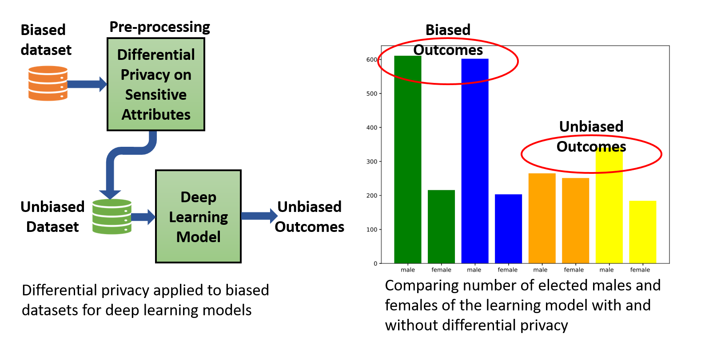 |
{kind=link}
Currently, deep learning models may take unfair decisions due to bias in the training datasets. Often, the bias is discrimination due to sensitive attributes such as gender, race, or ethnicity. In fact, discrimination is a daily reality that continues to exist in many fields, e.g. hiring processes, workplaces. In this paper, we empirically prove that learning models trained on biased datasets will produce unfair and discriminating models. To handle this problem, we propose a pre-processing approach based on differential privacy. Specifically, we implement the randomized response mechanism on the sensitive attribute to mitigate the inequity and avoid discrimination from the training dataset. We evaluate our approach in a hiring process using a synthetic dataset of resumes of candidates. Simulation results show that our approach mitigates bias and takes more fair decisions compared to the TensorFlow differential privacy library or a learning model without our pre-processing approach.
A. El Ouadrhiri, A. Abdelhadi, Differential Privacy for Fair Deep Learning Models, IEEE SysCon 2021. (IEEE Xplore)
Security of Multi-Layer Cyber Physical System
|
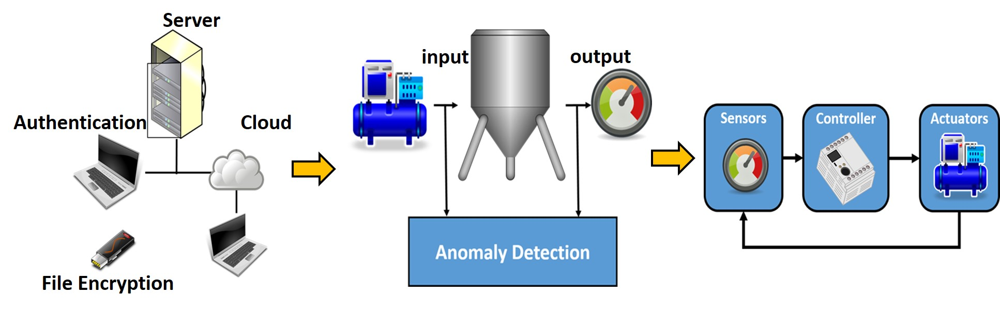 |
{kind=link}
We design a multi-layer cyber physical system model for enhancing security. The first layer provides secure communications, secure authentication, and secure encryption. The second layer monitors input and output of process for deviations from normal behavior to trigger automatic or manual response. The third layer consists of controllers that are resilient to cyber-attacks, e.g. bias injection attack, DoS attack, Replay attack, innovation injection.
J. Zhao, L. Mili and A. Abdelhadi, Robust Dynamic State Estimator to Outliers and Cyber Attacks, IEEE PESGM 2017. (ResearchGate)
Passive and Active Attacks Robustness in IoT Uplink Networks
|
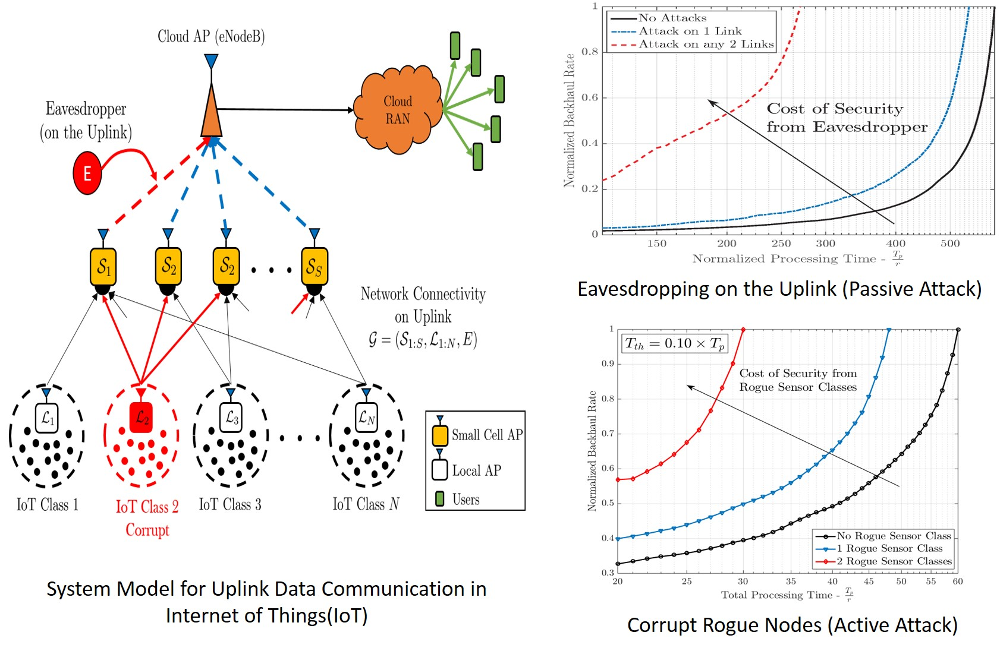 |
{kind=link}
We investigate the performance of Internet-of-Things (IoT) networks under passive attacks from eavesdroppers capable of monitoring individual links. An IoT network with multiple sensor classes is studied where every sensor class has a local access point (LAP) which are connected to one or more small cell base-station access points (SAP) which in turn are connected to a central cloud access point (CAP). The CAP interfaces the IoT network to the Cloud Radio Access Network which serves the users who request sensor readings. We propose a unique attack resilient IoT sensor reporting model based on IoT traffic characteristics and study the performance of this system under strict latency and secrecy constraints.
H. Shajaiah, A. Sengupta, A. Abdelhadi, and T. Clancy, Performance Trade-offs in IoT Uplink Networks under Secrecy Constraints, IEEE PIMRC 2019. (IEEE Xplore)(pdf)
Security and Privacy in Smart Grids
|
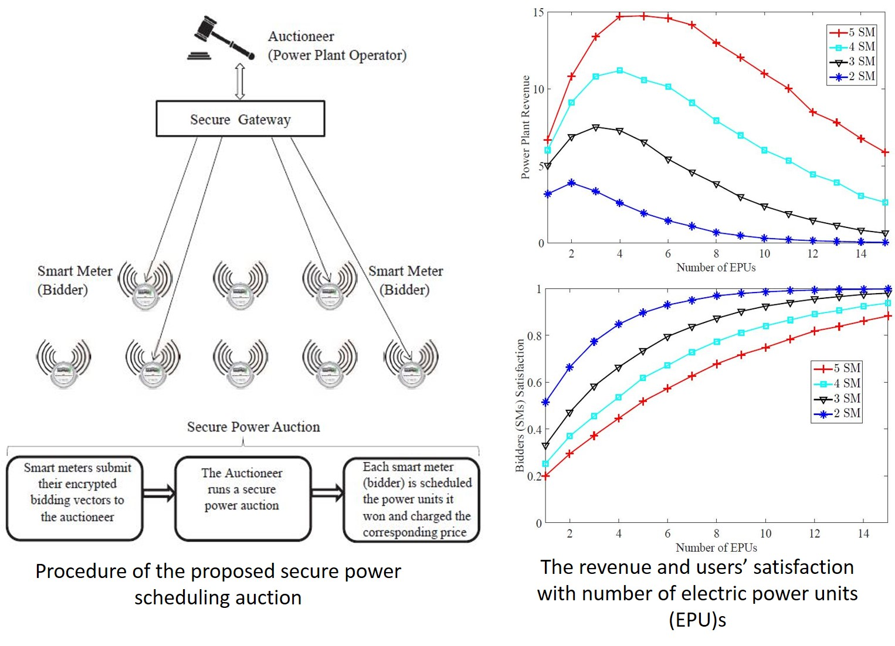 |
{kind=link}
We introduce a secure energy trading auction approach to schedule the power plant limited resources during peak hours time slots. In the proposed auction model, the power plant serving a power grid shares with the smart meters its maximum available resources during the next future peak time slot; smart meters (SM)s expecting a demand for additional power during future peak hours participate in the power auction by submitting bids of their offered price for their requested amount of power. To protect bidders’ privacy, homomorphic encryption is used to secure their bidding values and ensure avoiding bidrigging and frauds by the auctioneer or other consumers. We propose an effective power scheduling mechanism to distribute the operator's limited resources among smart meters participating in the power auction. Finally, we present simulation results for the performance of our secure power scheduling auction mechanism.
H. Shajaiah, A. Abdelhadi, and T. Clancy, Secure Power Scheduling Auction for Smart Grids Using Homomorphic Encryption, IEEE Big Data 2017. (IEEE Xplore)(pdf)
Machine to Machine Communications: Optimality
|
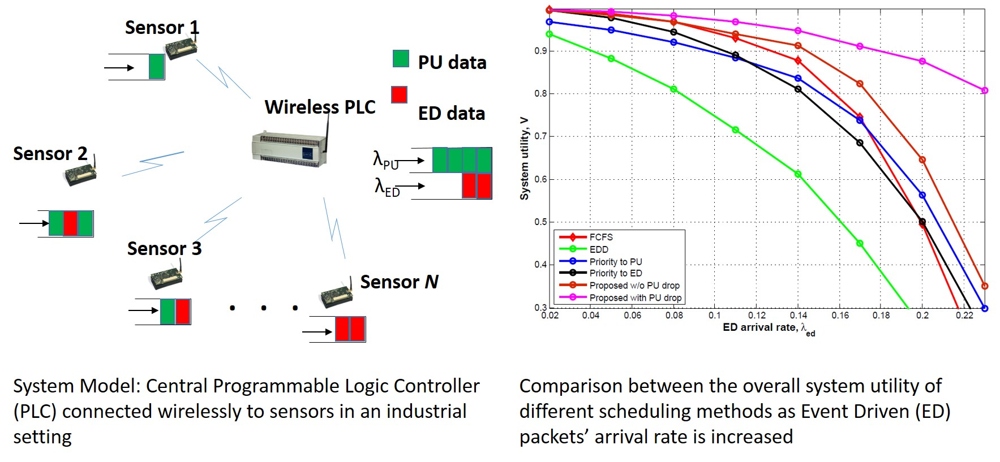 |
{kind=link}
We study the delay-performance for a generic Machine to Machine (M2M) uplink from the sensors to a Central Controller (CC). The uplink traffic is broadly classified as either Periodic Update (PU) and Event Driven (ED). The PU arrivals from different sensors are periodic whereas the ED arrivals are random and typically have low-arrival rate. The latency requirements of PU and ED packets differ greatly based on the criticality and importance of the M2M application. Our goal is to maximize the overall system utility while being proportionally fair to both PU and ED data. We show novel low-complexity packet schedulers (efficient and optimal) by determining the efficient/optimal fraction of time each of the PU and ED packets are served with (preemptive) priority. Using simulations for the queuing process at CC, we verify the correctness of the analytical result for our designed schedulers and compare their performance with various state-of-the-art scheduling policies such as First-Come First-Served (FCFS), (preemptive) priority policy. We show that the proposed optimal scheduler performs better than the existing schedulers for various simulation scenarios.
A. Kumar, A. Abdelhadi and T. Clancy, Novel anomaly detection and classification schemes for Machine-to-Machine uplink, IEEE Big Data 2018. (IEEE Xplore)(pdf)
A. Kumar, A. Abdelhadi and T. Clancy, A Delay Efficient MAC and Packet Scheduler for Heterogeneous M2M Uplink, IEEE GLOBECOM Workshop on Internet of Everything (IoE) 2016. (IEEE Xplore)
A. Kumar, A. Abdelhadi and T. Clancy, A Delay-Optimal Packet Scheduler for M2M Uplink, IEEE MILCOM 2016. (arXiv)
A. Kumar, A. Abdelhadi and T. Clancy, A Delay Efficient Multiclass Packet Scheduler for Heterogeneous M2M Uplink, IEEE MILCOM 2016. (arXiv)
A. Kumar, A. Abdelhadi and T. Clancy, An Online Delay Efficient Packet Scheduler for M2M Traffic in Industrial Automation, IEEE Systems Conference (SysCon) 2016. (IEEE Xplore) (arXiv)
Machine to Machine Communications: Security
|
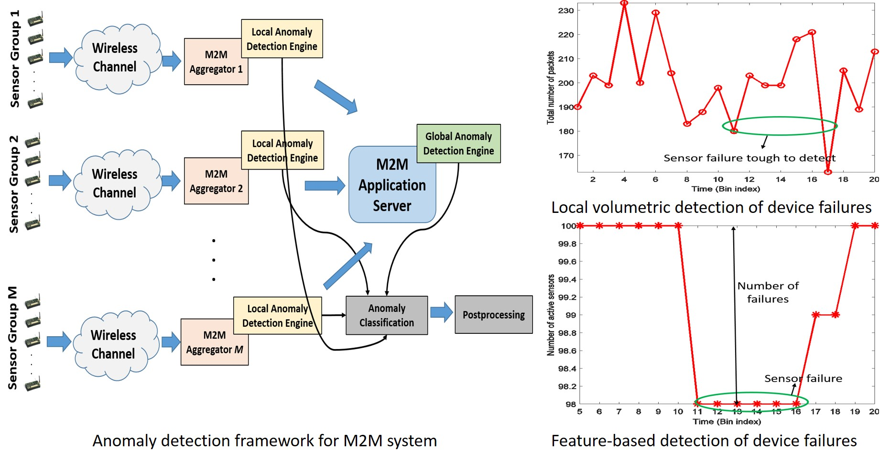 |
{kind=link}
Machine-to-Machine (M2M) networks being connected to the internet at large, inherit all the cyber-vulnerabilities of the standard Information Technology (IT) systems. Since perfect cyber-security and robustness is an idealistic construct, it is worthwhile to design intrusion detection schemes to quickly detect and mitigate the harmful consequences of cyber-attacks. Volumetric anomaly detection have been popularized due to their low-complexity, but they cannot detect low-volume sophisticated attacks and also suffer from high false-alarm rate. To over-come these limitations, feature-based detection schemes have been studied for IT networks. However these schemes cannot be easily adapted to M2M systems due to the fundamental architectural and functional differences between the M2M and IT systems. In this paper, we propose novel feature-based detection schemes for a general M2M uplink to detect distributed Denial-of-Service (DDoS) attacks, emergency scenarios and terminal device failures. The detection for DDoS attack and emergency senarios involves building up a database of legitimate M2M connections during a training phase and then flagging the new M2M connections as anomalies during the evaluation phase. To distinguish between DDoS attack and emergency scenarios that yield similar signatures for anomaly detection schemes, we propose a modified Canberra distance metric. It basically measures the similarity or differences in the characteristics of inter-arrival time epochs for any two anomalous streams. We detect device failures by inspecting for the decrease in active M2M connections over a reasonably large time interval. Lastly using Monte-Carlo simulations, we show that the proposed anomaly detection schemes have high detection performance and low-false alarm rate.
A. Kumar, A. Abdelhadi and T. Clancy, Novel anomaly detection and classification schemes for Machine-to-Machine uplink, IEEE Big Data 2018. (IEEE Xplore)(pdf)
Secure Spectrum Auctions
|
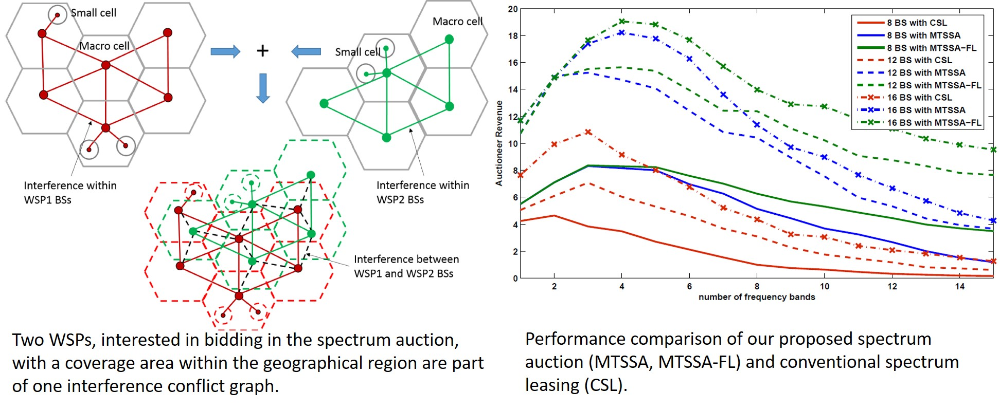 |
{kind=link}
Secure spectrum auctions can revolutionize the spectrum utilization of cellular networks and satisfy the ever increasing demand for resources. In this research work, a multi-tier dynamic spectrum sharing system is studied for efficient sharing of spectrum with commercial wireless system providers (WSPs), with an emphasis on federal spectrum sharing. The proposed spectrum sharing system optimizes usage of spectrum resources, manages intra-WSP and inter-WSP interference and provides essential level of security, privacy, and obfuscation to enable the most efficient and reliable usage of the shared spectrum. It features an intermediate spectrum auctioneer responsible for allocating resources to commercial WSPs by running secure spectrum auctions. The proposed secure spectrum auction, MTSSA, leverages Paillier cryptosystem to avoid possible fraud and bid-rigging. Numerical simulations are provided to compare the performance of MTSSA, in the considered spectrum sharing system, with other spectrum auction mechanisms for realistic cellular systems.
A. Abdelhadi, H. Shajaiah, and T. Clancy, A Multi-Tier Wireless Spectrum Sharing System Leveraging Secure Spectrum Auctions, IEEE Transactions on Cognitive Communications and Networks, 2015. (IEEE Xplore) (arXiv)
H. Shajaiah, A. Abdelhadi, and T. Clancy, An Optimal Strategy for Determining True Bidding Values in Secure Spectrum Auctions, IEEE Systems Journal 2019. (IEEE Xplore)
Optimal Power Allocation in Cellular Networks
|
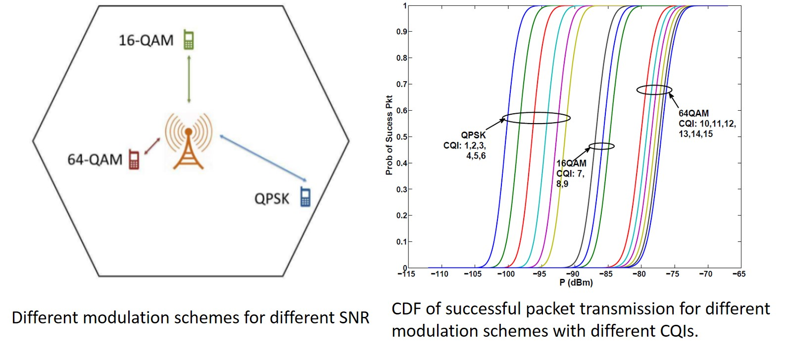 |
{kind=link}
We introduce a novel approach for power allocation in cellular networks and prove that it is optimal. In addition, we demonstrate the optimal power allocation for QPSK, 16-QAM, and 64-QAM modulation schemes and the role of channel quality indicator (CQI). We used sigmoidal-like utility functions to represent the probability of successful reception of packets at user equipment (UE). Given that CQI indicates the data rate that a downlink channel can support and using Levenberg-Marquardt (LM) Optimization method, we present utility functions of different CQI values for standardized 15 Modulation order and Coding Scheme (MCS) in cellular networks. Finally, we simulate and show the results of our optimal power allocation algorithm.
A. Abdelhadi, A. Khawar and T. Clancy, Optimal Downlink Power Allocation in Cellular Networks, Elsevier Physical Communication, 2015. (ScienceDirect) (arXiv)
Y. Wang and A. Abdelhadi, A QoS-based Power Allocation for Cellular Users with Different Modulations, IEEE ICNC Workshop CNC, 2016. (IEEE Xplore) (arXiv)(MATLAB)
Y. Wang, A. Abdelhadi and T. Clancy, Optimal Power Allocation for LTE Users with Different Modulations, IEEE SysCon 2016. (IEEE Xplore) (arXiv)(MATLAB)
Optimal Application-Aware Resource Allocation in Cellular Systems
|
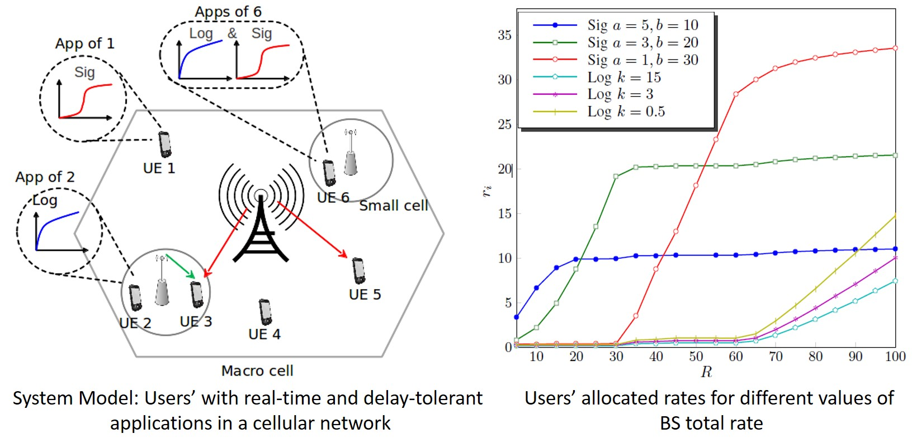 |
{kind=link}
In my recent work, I have studied optimal resouce allocation in cellular networks, e.g. LTE. Optimal resource allocation is of paramount importance in utilizing the scarce radio spectrum efficiently and provisioning quality of service for miscellaneous user applications, generating hybrid data traffic streams in present-day wireless communications systems. A dynamism of the hybrid traffic stemmed from concurrently running mobile applications with temporally varying usage percentages in addition to subscriber priorities impelled from network providers’ perspective necessitate resource allocation schemes assigning the spectrum to the applications accordingly and optimally. The below manuscripts include novel centralized and distributed radio resource allocation optimization problems for hybrid traffic-conveying cellular networks communicating users with simultaneously running multiple delay-tolerant and real-time applications modelled as logarithmic and sigmoidal utility functions, volatile application percent usages, and diverse subscriptions. Casting under a utility proportional fairness entail no lost calls for the proposed modi operandi, for which we substantiate the convexity, devise computationally efficient algorithms catering optimal rates to the applications, and prove a mutual mathematical equivalence. Ultimately, the algorithms performance is evaluated via simulations and discussing germane numerical results.
T. Erpek, A. Abdelhadi and T. Clancy, Application-Aware Resource Block and Power Allocation for LTE, IEEE SysCon 2016. (IEEE Xplore) (arXiv)
H. Shajaiah, A. Abdelhadi and T. Clancy, An Application-Aware Spectrum Sharing Approach for Commercial Use of 3.5 GHz Spectrum, IEEE SysCon 2016. (IEEE Xplore) (arXiv)
T. Erpek, A. Abdelhadi and T. Clancy, An Optimal Application-Aware Resource Block Scheduling in LTE, IEEE ICNC Workshop CCS, 2015. (IEEE Xplore) (arXiv)
A. Abdel-Hadi and T. Clancy, A Utility Proportional Fairness Approach for Resource Allocation of 4G-LTE, IEEE ICNC Workshop CNC, 2014. (IEEE Xplore) (pdf) (MATLAB)(JAVA)
A. Abdel-Hadi, T. Clancy, J. Mitola III, A Resource Allocation Algorithm for Multi-Application Users in 4G-LTE, ACM MobiCom Workshop CRAB, 2013. (ACM Digital Library) (pdf) (MATLAB)
A. Abdel-Hadi and T. Clancy, A Robust Optimal Rate Allocation Algorithm and Pricing Policy for Hybrid Traffic in 4G-LTE, IEEE PIMRC 2013. (IEEE Xplore) (pdf) (MATLAB)
M. Ghorbanzadeh, A. Abdelhadi and T. Clancy, Optimal Radio Resource Allocation for Hybrid Traffic in Cellular Networks: Centralized and Distributed Architecture, under submission. (arXiv)
Z. Kbah and A. Abdelhadi, Resource Allocation in Cellular Systems for Applications with Random Parameters, IEEE ICNC Workshop CNC, 2016. (IEEE Xplore) (arXiv)
Implementation of Optimal Resource Allocation in Wireless Networks
|
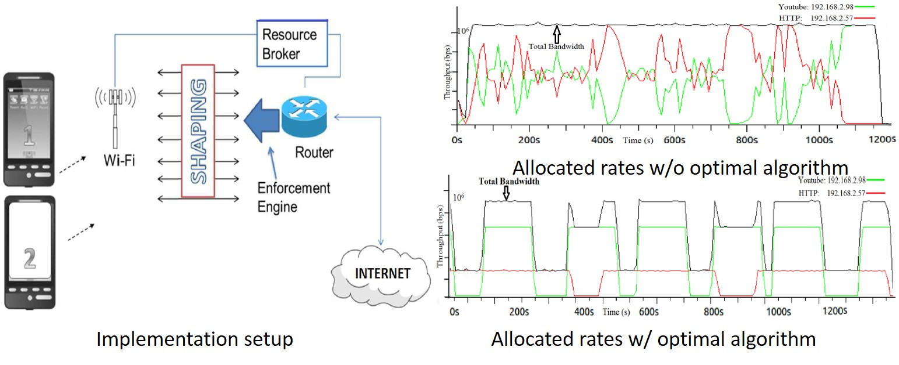 |
{kind=link}
Recently, we implemented our developed optimal resource allocation algorithm by running real-life experements on real-time and delay-tolerant application running on smart phones. In this resaerch work, we investigate the QoE of users running real-life real-time and delay-tolerant applications by implementing an Internet-connected real-world mobile network which hosts a node with a centralized convex resource allocation optimization algorithm to calculate and enforce an optimal bandwidth distribution. The experiments show that leveraging the rate assignment approach escalates the real-life network traffic QoE through a fine-grained temporal resource allocation pattern which plummets the total bandwidth consumption and the cost of employing the services.
M. Ghorbanzadeh, A. Abdelhadi, A. Amanna, J. Dwyer and T. Clancy, Implementing an Optimal Rate Allocation Tuned to the User Quality of Experience, IEEE ICNC, 2015. (IEEE Xplore) (arXiv)
M. Ghorbanzadeh, A. Abdelhadi and T. Clancy, A Utility Proportional Fairness Approach for Resource Block Allocation in Cellular Networks, IEEE ICNC Workshop CCS, 2015. (IEEE Xplore) (arXiv)
M. Ghorbanzadeh A. Abdelhadi and T. Clancy, Optimal Radio Resource Allocation for Hybrid Traffic in Cellular Networks: Traffic Analysis and Implementation, under submission. (arXiv)
Carrier Aggregation and Frequency Reuse
|
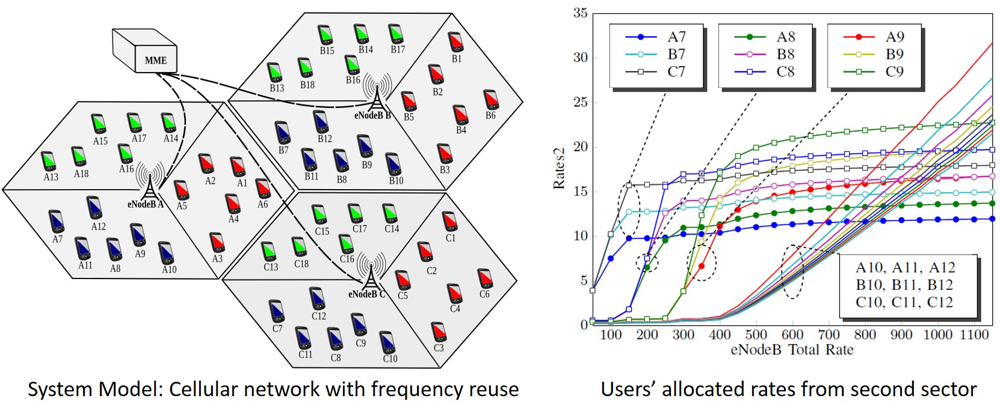 |
{kind=link}
We recently introduce a carrier aggregation and frequency reuse to our optimal resource allocation for users with elastic and inelastic traffic in cellular networks. Our objective is to allocate the resources to the users optimally from multiple carriers and with fair allocation for different cells and sectors. In addition, every user subscribing for the mobile service is guaranteed to have a minimum quality-of-service (QoS) with priority to real-time application users. Our novel resource allocation algorithm selects the carrier or multiple carriers that provide the minimum price for the allocated resources. We present a distributed algorithm that allocates the resources optimally. In addition, we analyze the convergence of the algorithm with different network traffic densities. We investigate the results for different scenarios.
H. Shajaiah, A. Abdelhadi, T. Clancy, Towards an Application-Aware Resource Scheduling with Carrier Aggregation in Cellular Systems, IEEE Communications Letters, 2015. (IEEE Xplore) (arXiv)
H. Shajaiah, A. Abdelhadi, T. Clancy, An Efficient Multi-Carrier Resource Management with User Discrimination for 5G Wireless Systems, Springer International Journal of Wireless Information Networks, 2015. (SpringerLink) (arXiv)
H. Shajaiah, A. Abdelhadi and T. Clancy, A Price Selective Centralized Algorithm for Resource Allocation with Carrier Aggregation in LTE Cellular Networks, IEEE WCNC, 2015. (IEEE Xplore) (arXiv)
H. Shajaiah, A. Abdel-Hadi and T. Clancy, Spectrum Sharing between Public Safety and Commercial Users in 4G-LTE, IEEE ICNC, 2014. (IEEE Xplore) (pdf)
H. Shajaiah, A. Abdel-Hadi and T. Clancy, Utility Proportional Fairness Resource Allocation with Carrier Aggregation in 4G-LTE, IEEE MILCOM, 2013. (IEEE Xplore) (pdf)
H. Shajaiah, A. Abdelhadi and T. Clancy, Multi-Application Resource Allocation with Users Discrimination in Cellular Networks, IEEE PIMRC, 2014. (IEEE Xplore) (arXiv)
A. Abdelhadi and T. Clancy, An Optimal Resource Allocation with Joint Carrier Aggregation in 4G-LTE, IEEE ICNC Workshop CCS, 2015. (IEEE Xplore) (arXiv) (MATLAB)
A. Abdelhadi and T. Clancy, Optimal Context-Aware Resource Allocation in Cellular Networks, IEEE ICNC, 2016. (IEEE Xplore) (arXiv)
A. Abdelhadi and T. Clancy, An Optimal Resource Allocation with Frequency Reuse in Cellular Networks, IEEE ICNC, 2016. (IEEE Xplore) (arXiv) (MATLAB)
Interference Mitigation between Shipborne MIMO Radar and Onshore Cellular System
|
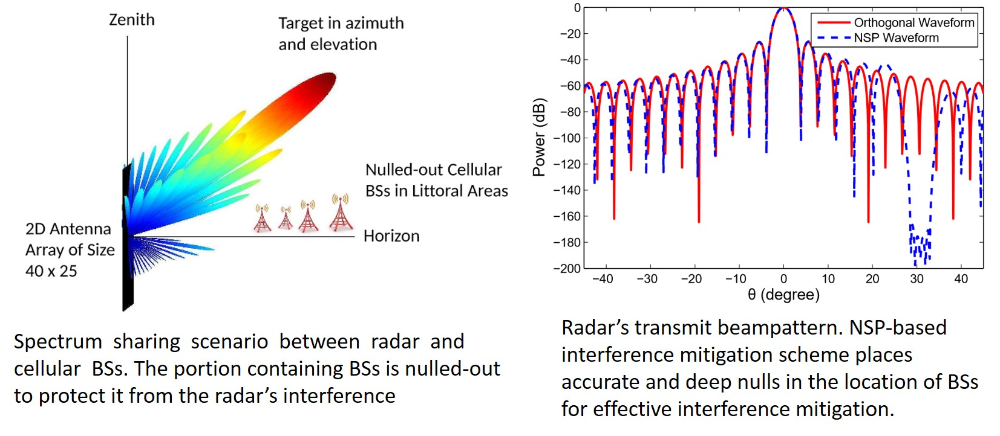 |
{kind=link}
Sharing spectrum with incumbents such as radar systems is an attractive solution for cellular operators in order to meet the ever growing bandwidth requirements and ease the spectrum crunch problem. In order to realize efficient spectrum sharing, interference mitigation techniques are required. In this research effort, we address techniques to mitigate MIMO radar interference at MIMO cellular base stations (BSs). We specifically look at the amount of power received at BSs when radar uses null space projection (NSP)-based interference mitigation method. NSP reduces the amount of projected power at targets that are in-close vicinity to BSs. We study this issue and show that this can be avoided if radar employs a larger transmit array. In addition, we compute the coherence time of channel between radar and BSs and show that the coherence time of channel is much larger than the pulse repetition interval of radars. Therefore, NSP-based interference mitigation techniques which depends on accurate channel state information (CSI) can be effective as the problem of CSI being outdated does not occur for most practical scenarios.
A. Khawar, A. Abdelhadi and T. Clancy, Coexistence Analysis between Radar and Cellular System in LoS Channel, IEEE Antennas and Wireless Propagation Letters, 2015. (IEEE Xplore) (arXiv)
A. Khawar, A. Abdelhadi and T. Clancy, Channel Modeling between Seaborne MIMO Radar, under submission. (arXiv)(MATLAB)
A. Khawar, A. Abdelhadi and T. Clancy, 3D Channel Modeling between Seaborne MIMO Radar and MIMO Cellular System, under submission. (arXiv)(MATLAB)
H. Shajaiah, A. Abdelhadi and T. Clancy, Spectrum Sharing Approach between Radar and Communication Systems and Its Impact on Radar's Detectable Target Parameters, IEEE Vehicular Technology Conference (VTC) 2015. (IEEE Xplore) (pdf)
A. Abdelhadi and T. Clancy, Network MIMO with Partial Cooperation between Radar and Cellular Systems, IEEE ICNC 2016. (IEEE Xplore) (arXiv)
A. Abdelhadi, Spatial Coexistence of Cooperative Radar and Communication Systems, IFIP/IEEE International Conference on Performance Evaluation and Modeling in Wired and Wireless Networks (PEMWN) 2019. (pdf)(python)
Coexistence of MIMO Radar with MIMO Communication Systems
|
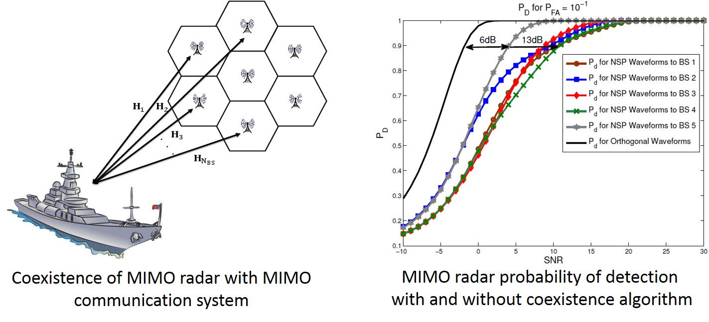 |
{kind=link}
Spectrum sharing is a new way forward to solve spectrum scarcity problem. In this research work, we propose a spatial approach for spectrum sharing between a MIMO radar and an LTE cellular system with  base stations (BS). The MIMO radar and LTE share interference channels
base stations (BS). The MIMO radar and LTE share interference channels  . We propose projecting the radar signal onto the null space of interference channel between the MIMO radar and LTE using our proposed interference-channel-selection algorithm, in order to have zero-interference from the MIMO radar. We select interference channel with the maximum null space and project the radar signal onto the null space of this channel. Our proposed spatial spectrum-sharing algorithm is radar-centric such that it causes minimum loss in radar performance by carefully selecting the interference channel and at the same time protects the ith LTE BS from the radar interference. Through our analytical and simulation results we show that the loss in the radar performance is acceptable when the proposed interference-channel-selection algorithm is used to select the channel onto which radar signals are projected.
. We propose projecting the radar signal onto the null space of interference channel between the MIMO radar and LTE using our proposed interference-channel-selection algorithm, in order to have zero-interference from the MIMO radar. We select interference channel with the maximum null space and project the radar signal onto the null space of this channel. Our proposed spatial spectrum-sharing algorithm is radar-centric such that it causes minimum loss in radar performance by carefully selecting the interference channel and at the same time protects the ith LTE BS from the radar interference. Through our analytical and simulation results we show that the loss in the radar performance is acceptable when the proposed interference-channel-selection algorithm is used to select the channel onto which radar signals are projected.
A. Khawar, A. Abdel-Hadi and T. Clancy, Spectrum Sharing between S-band Radar and LTE Cellular System: A Spatial Approach, IEEE DySPAN SSPARC Workshop, 2014. (IEEE Xplore) (pdf)
H. Shajaiah, A. Khawar, A. Abdel-Hadi and T. Clancy, Resource Allocation with Carrier Aggregation in LTE Advanced Cellular System sharing Spectrum with S-band Radar, IEEE DySPAN SSPARC Workshop, 2014. (IEEE Xplore) (pdf)
A. Khawar, A. Abdel-Hadi, T. Clancy and R. McGwier, Beampattern Analysis for MIMO Radar and Telecommunication System Coexistence, IEEE ICNC 2014. (IEEE Xplore) (pdf)
A. Khawar, A. Abdelhadi and T. Clancy, Target Detection Performance of Spectrum Sharing MIMO Radars, IEEE Sensors Journal, 2015. (IEEE Xplore) (arXiv).
M. Ghorbanzadeh, A. Abdelhadi and T. Clancy, A Utility Proportional Fairness Band width Allocation in Radar-Coexistent Cellular Networks, IEEE MILCOM, 2014. (IEEE Xplore) (arXiv) (MATLAB)
A. Khawar, A. Abdelhadi and T. Clancy, On The Impact of A Time-Varying Interference-Channel on the Spatial Approach of Spectrum Sharing between S-band Radar and Communication System, IEEE MILCOM, 2014. (IEEE Xplore) (arXiv).
A. Khawar, A. Abdelhadi and T. Clancy, A Mathematical Analysis of Cellular Interference on the Performance of S-band Military Radar Systems, IEEE Wireless Telecommunications Symposium (WTS), 2014. (IEEE Xplore) (pdf)
C. Shahriar, A. Abdelhadi and T. Clancy, Overlapped-MIMO Radar Waveform Design for Coexistence With Communication Systems, IEEE WCNC, 2015. (IEEE Xplore) (arXiv)(MATLAB)
J. Mahal, A.Khawar, A. Abdelhadi, T. Clancy, Spectral Coexistence of MIMO Radar and MIMO Cellular System, IEEE Transactions on Aerospace and Electronic Systems, accepted.
Constant Envelope Finite Alphabet Waveform for MIMO Radar with Spectrum Sharing Constraints
|
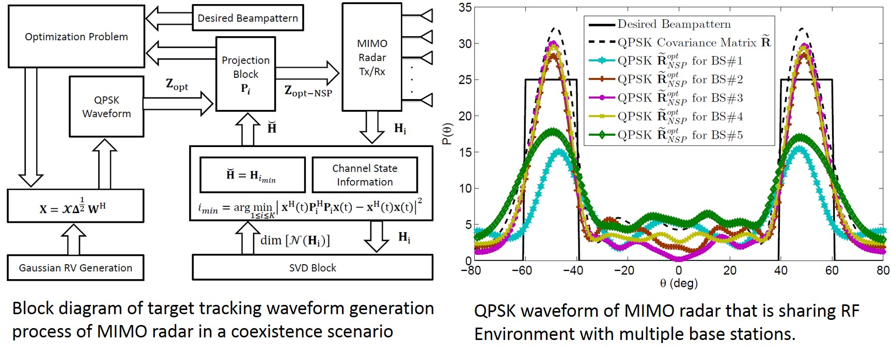 |
{kind=link}
Multiple-input multiple-output (MIMO) radar is a relatively new concept in the field of radar signal processing. Many novel MIMO radar waveforms have been developed by considering various performance metrics and constraints. In this research, we show that finite alphabet constant-envelope (FACE) quadrature-pulse shift keying (QPSK) waveforms can be designed to realize a given covariance matrix by transforming a constrained nonlinear optimization problem into an unconstrained nonlinear optimization problem. In addition, we design QPSK waveforms in a way that they don't cause interference to a cellular system, by steering nulls towards a selected base station (BS). The BS is selected according to our algorithm which guarantees minimum degradation in radar performance due to null space projection (NSP) of radar waveforms. We design QPSK waveforms with spectrum sharing constraints for a stationary and moving radar platform. We show that the waveform designed for stationary MIMO radar matches the desired beampattern closely, when the number of BS antennas is considerably less than the number of radar antennas  , due to quasi-static interference channel. However, for moving radar the difference between designed and desired waveforms is larger than stationary radar, due to rapidly changing channel.
, due to quasi-static interference channel. However, for moving radar the difference between designed and desired waveforms is larger than stationary radar, due to rapidly changing channel.
A. Khawar, A. Abdelhadi and T. Clancy, QPSK Waveform for MIMO Radar with Spectrum Sharing Constraints, Elsevier Physical Communication, 2015. (ScienceDirect) (arXiv)
A. Khawar, A. Abdel-Hadi and T. Clancy, MIMO Radar Waveform Design for Coexistence With Cellular Systems, IEEE DySPAN SSPARC Workshop, 2014. (IEEE Xplore) (pdf)
Autonomous Aerial Vehicles - Embedded (Horus Project Part 1)
|
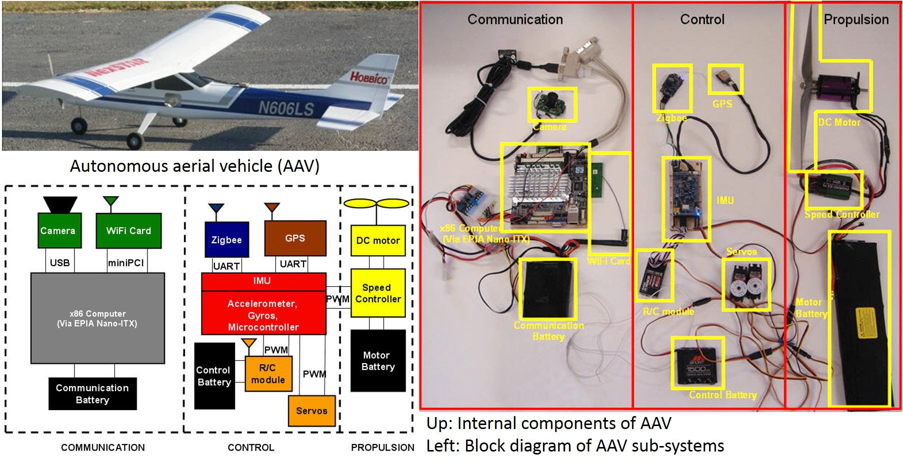 |
{kind=link}
Mobile cyberphysical systems have received considerable attention over the last decade, as communication, computing and control come together on a common platform. Understanding the complex interactions that govern the behavior of large complex cyberphysical systems is not an easy task. The goal of this research work is to address this challenge in the particular context of multimedia delivery over an autonomous aerial vehicle (AAV) network. Bandwidth requirements and stringent delay constraints of real-time video streaming, paired with limitations on computational complexity and power consumptions imposed by the underlying implementation platform, make cross-layer and cross-domain co-design approaches a necessity.
A. Abdel-Hadi, A. Gerstlauer and S. Vishwanath, HORUS: A Testbed for Wireless UAV Networks, UT-Austin, WNCG Poster, 2010. (pdf)
A. Abdel-Hadi, A. Gerstlauer and S. Vishwanath, Real-Time Rate Distortion Optimization of Wireless Video with Horus, UT-Austin, WNCG Poster, 2011. (pdf)
Wireless Video Transmission - Optimization (Horus Project Part 2)
|
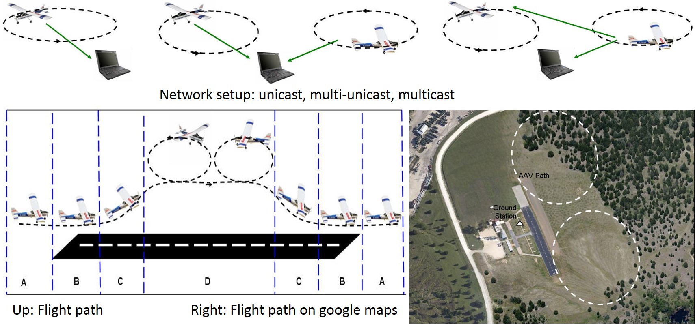 |
{kind=link}
Our ultimate goal is to develop algorithms that exploit the structure of multimedia to deliver them efficiently and reliably over an AAV network, and test them in a real-world setting using a testbed. We have developed our own low-complexity rate-distortion optimized (RDO) streaming algorithms, and show that they outperform other mechanisms in the context of Horus, our custom built AAV testbed (see Horus Project part 1). We have developed software simulations for the mobility and channel models between AAVs, and we tested both existing and our proposed RDO video streaming techniques using these simulation models. Results show that optimized streaming can result in much more reliable and efficient video delivery than traditional protocols, in variants both with or without feedback. In this paper, we extend our previous work by implementing the actual system in realistic settings. We test our proposed RDO protocol and other protocols for real-time video streaming under real-world conditions in a multi-AAV setting. We use both temporal and spatial distortion measures to select the most reliable and efficient protocol.
|
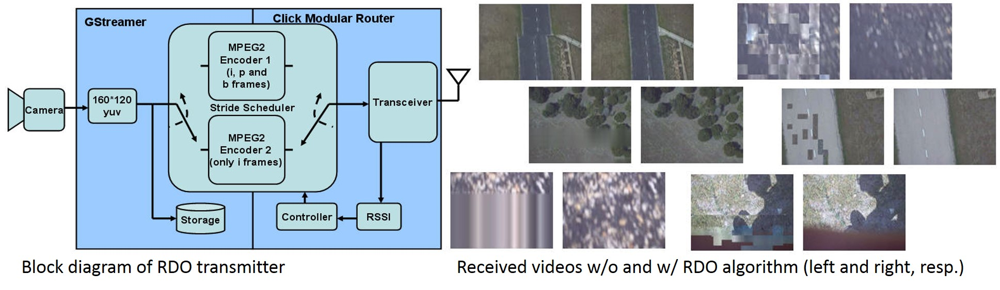 |
{kind=link}
As a continuation of part 1 of Horus project, we implemented our novel, low-complexity rate-distortion optimized (RDO) algorithms specifically targeted at video streaming over wireless mobile networks. We develop both standalone RDO protocols as well as cross-layer approaches for co-design of adaptive video encoding with RDO transmission policies in a low-complexity, low-power environment. We test the performance of our RDO algorithms using a network of AAVs both in simulation and implementation. Results show that our optimized streaming algorithms lead to significantly reduced video distortions at low computational complexity, enabling reliable real-time video delivery over time-varying wireless mobile networks.
A. Abdel-Hadi, A. Gerstlauer and S. Vishwanath, Real-Time Rate-Distortion Optimized Streaming of Wireless Video. (arXiv)
A. Abdel-Hadi, J. Michel, A. Gerstlauer and S. Vishwanath, Real-Time Optimization of Video Transmission in a Network of AAVs, IEEE VTC, 2011. (IEEE Xplore) (pdf)
Information Theoretic Capacity and Achievable Rates of Multicast Networks
We investigated alignment schemes for multicast traffic over an equal path length multihop time-varying circularly symmetric fading channels. Our main contribution is determining achievable rates and alignment mechanisms for multi-hop communication for multicast networks when the number of relays is smaller or larger than the number of sources/destinations by combining elements of the multi-hop and ergodic alignment.
In another research work, we investigated the impact of mobility on the capacity scaling laws for wireless multicast networks. The following summarizes our main contributions: (i). analogous to the beneficial impact that mobility has on the throughput of unicast networks, we establish that mobility can provide a similar gain in the order-wise growth-rate of the throughput for multicast networks. We consider an all-mobile multicast network for both protocol and physical interference models, and characterizes the multicast capacity scaling for these scenarios. These scaling results show that the growth-rate of the throughput in the all-mobile multicast network is order-wise higher compared to the all-static multicast network, (ii). in a static-mobile hybrid multicast network, when mobility is limited to some nodes in the network, mobility can impact the scaling law of the total throughput. In particular, if there are sufficient number of mobile nodes (but order-wise smaller than the total number of nodes) in the network, then mobile nodes can enhance the order behavior of the total multicast throughput.
A. Abdel-Hadi and S. Vishwanath, On Multicast Interference Alignment in Multihop Networks, IEEE Information Theory Workshop (ITW), 2010. (IEEE Xplore) (pdf)
J. Jose, A. Abdel-Hadi, P. Gupta and S. Vishwanath, On the Impact of Mobility on Multicast Capacity of Wireless Networks, IEEE INFOCOM, 2010. (IEEE Xplore) (pdf)
A. Abdel-Hadi, J. Jose, P. Gupta and S. Vishwanath, Impact of Mobility on Multicast Capacity of Wireless Networks, Defense Threat Reduction Agency (DTRA) Basic Research Technical Review Poster Session, 2009. (pdf)